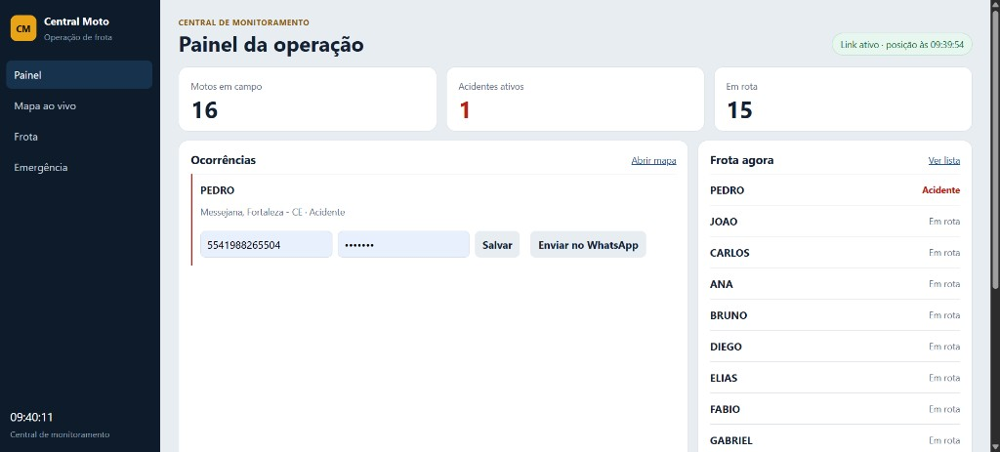
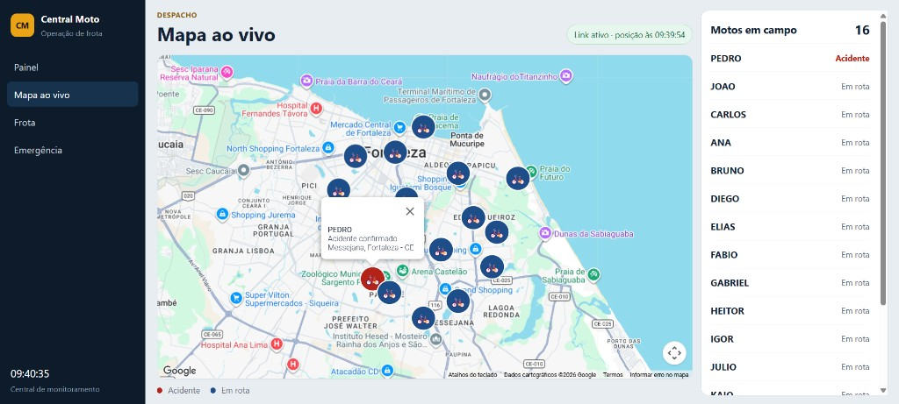
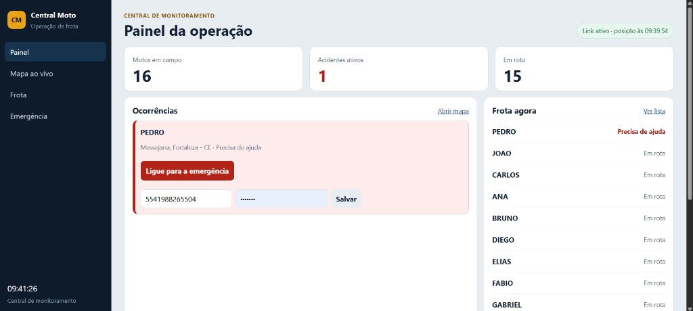

Posição
O campo publica latitude, longitude e estado por MQTT. A detecção da queda não é calculada nesta aplicação web.
TCC · Engenharia de Computação · UFC
Arquitetura do protótipo. O campo publica a posição. A central confirma com o motociclista e destaca quando a operação precisa ligar para a emergência.
Gustavo Damasceno de Campos
O que este sistema é
O campo publica latitude, longitude e estado por MQTT. A detecção da queda não é calculada nesta aplicação web.
Com suspeita de queda, o WhatsApp pergunta se a pessoa está bem. O prazo é de 5 minutos.
Pedido de ajuda, ou o fim do prazo sem resposta, pede para ligar. A central não disca.
Quem publica no MQTT já manda Status: true ou false. A contribuição é a arquitetura que liga posição, confirmação e a decisão da central.
Visão geral
Posição
Tela, confirmação e resposta
Visão geral
| Tempo | Onde | O que faz |
|---|---|---|
| Contínuo | MqttMonitorService | Fica conectado ao broker e reconecta 5 segundos depois de uma queda. |
| A cada mensagem | Ingestão | Atualiza a posição daquele User. |
| A cada 5 segundos | painel.js | O navegador pede GET /Home/Estado e redesenha a tela. |
| 5 minutos | OperacaoService | Prazo para o motociclista responder ao WhatsApp. |
A tela não abre uma conexão MQTT. O navegador só lê o estado que o servidor já montou.
Componentes
Program.cs registra store, operação e MQTT como singleton. O geocoding usa AddHttpClient, o cliente HTTP gerenciado, não um new HttpClient() por mensagem.
Componentes
Última posição de cada motociclista. Só em memória. A chave é o User.
Telefone, chave do WhatsApp, confirmações e o prazo de 5 minutos. Copia a leitura antes de aplicar isso.
Serviço em segundo plano. O cliente MQTT não desliga quando a página HTTP termina.
Geocodificação reversa. Só entra quando o JSON não traz Endereco.
Entrada MQTT
broker.hivemq.com na porta 1883. QoS pelo menos uma vez.
DadosDeMonitoramento_TCC2. É o único canal da frota.
Gudamasc- mais 8 caracteres aleatórios. Um id fixo colide no broker público.
Se a conexão cai, o serviço marca a central como desconectada, espera 5 segundos e tenta de novo. Para ver as mensagens no navegador, o cliente WebSocket usa o mesmo broker em mqtt-dashboard.com:8884 com SSL. O broker público não guarda histórico: só aparece o que for publicado depois do Subscribe.
Entrada MQTT
{
"Latitude": -3.807,
"Longitude": -38.54,
"User": "PEDRO",
"Status": true,
"Endereco": "Messejana, Fortaleza - CE"
}
| Campo | Papel |
|---|---|
| Latitude, Longitude | Ponto no mapa. |
| User | Identidade. É a chave da frota. |
| Status | true é suspeita de queda. false é em rota. |
| Endereco | Opcional. Vazio chama o geocoding. |
O nome das propriedades não diferencia maiúsculas. User vazio ou JSON inválido é ignorado. O mesmo User substitui a posição. Um nome novo entra na frota. Por isso 15 publicações com nomes diferentes aparecem juntas, e uma segunda do Pedro só move o Pedro.
GeocodingService
GeocodingService
O mapa desenha o marcador com a latitude e a longitude. Usa a Maps JavaScript API e a mesma chave GoogleMaps:ApiKey.
ObterEnderecoAsync chama a Geocoding API. O texto da ficha e do balão é o formatted_address, ou o Endereco que já veio no MQTT.
Não há nova ida ao Google a cada atualização de 5 segundos. O resultado fica na leitura em memória.
GeocodingService · a API
Mensagem sem endereço:
{ "Latitude": -3.807, "Longitude": -38.54, "User": "PEDRO", "Status": true }
vira esta consulta. Latitude antes da longitude, com ponto. Em português, -3,807 levaria vírgula e quebraria o parâmetro.
GET /maps/api/geocode/json?latlng=-3.807,-38.54&key=CHAVE
GeocodingService · a API
| Parâmetro | Origem | Função |
|---|---|---|
latlng | Latitude e Longitude do MQTT | O ponto a resolver. Cultura invariante, para o ponto decimal. |
key | GoogleMaps:ApiKey | Autoriza a Geocoding API. |
Não há language, region nem result_type. O Google escolhe o idioma e devolve a lista padrão, do endereço mais específico para o mais geral. Se o serviço de fundo para, o token de cancelamento do MQTT interrompe essa chamada.
GeocodingService · a API
{
"status": "OK",
"results": [{
"formatted_address": "Rua Exemplo, 100 - Messejana, Fortaleza - CE, Brasil",
"geometry": { "location": { "lat": -3.807, "lng": -38.54 } },
"place_id": "ChIJ...",
"types": ["street_address"]
}]
}
results[0].formatted_address. Não há uma classe para o JSON: o código abre o documento e faz esses dois acessos.
address_components, geometry, place_id, types e os resultados seguintes. O marcador continua na coordenada original do MQTT.
GeocodingService · a API
| status | O que significa | O que a central faz |
|---|---|---|
OK | Há pelo menos um resultado | Usa o primeiro formatted_address |
ZERO_RESULTS | O ponto não tem endereço | Lista vazia, texto de falha |
REQUEST_DENIED | A chave não tem a Geocoding API | HTTP 200 e results vazio. Mesmo texto |
OVER_QUERY_LIMIT | A cota estourou | Mesmo texto de falha |
INVALID_REQUEST | latlng mal formado | Mesmo texto de falha |
GeocodingService · falha
| Situação | O que o código faz |
|---|---|
| Chave ausente no appsettings | Não chama o Google |
| HTTP fora de 2xx | Descarta o corpo |
JSON sem results, ou lista vazia | Não há endereço |
formatted_address vazio ou ausente | Trata como falha |
| Rede, JSON inválido ou propriedade faltando | A exceção vira o mesmo texto |
Tudo isso aparece como Endereço não disponível. Não há nova tentativa, cache próprio nem fila. Uma chave que desenha o mapa pode não ter a Geocoding API liberada. Por isso o protótipo manda o endereço dentro do JSON quando quer o texto garantido.
Estado operacional
Estado operacional
| Situação | Significado | Cor no mapa |
|---|---|---|
| rota | Em rota. Status falso, ou a pessoa disse que está bem. | Azul #1d4e89 |
| acidente | Queda informada, ainda sem pedido de socorro da pessoa. | Vermelho #b42318 |
| aguardando | Mensagem enviada, prazo correndo. | Laranja #b54708 |
| ajuda | A pessoa respondeu que precisa de ajuda. | Vermelho, com o aviso de ligar |
| expirada | Os 5 minutos acabaram sem resposta. | Vermelho, com o aviso de ligar |
O marcador é um círculo com o emoji de bicicleta. Acidente, ajuda e prazo estourado abrem um balão. Enquanto aguarda, o balão diz que a central espera a resposta.
Fluxo de uma posição
O campo publica no tópico DadosDeMonitoramento_TCC2.
O HiveMQ entrega ao MqttMonitorService.
Se Endereco está vazio, o GeocodingService devolve o endereço formatado.
O store grava a leitura pela chave User.
A cada 5 segundos, GET /Home/Estado. O OperacaoService copia as posições e devolve situação, telefone e prazo.
A cópia evita que “estou bem” altere o objeto original da memória ou a referência fixa da LUAPEREIRA.
Fluxo do WhatsApp
Telefone e chave ficam na Frota e em data/contatos.json. O mapa não edita esses campos.
Aceita DDD com 10 ou 11 dígitos, ou já com 55. A central guarda só os dígitos, com 55 na frente.
No envio, se o CallMeBot recusar a chave para o celular com o nono dígito, a central tenta de novo sem esse 9. É o formato em que o WhatsApp brasileiro às vezes registra o número. A API é gratuita e de uso pessoal: não envia para um terceiro a partir da chave de outra pessoa.
Fluxo do WhatsApp
O operador chama POST /Home/Perguntar.
O OperacaoService cria a confirmação por 5 minutos e faz GET em api.callmebot.com/whatsapp.php.
O motociclista recebe o texto e o link /c/{id}.
Estou bem volta para rota. Preciso de ajuda vira ajuda. Silêncio de 5 minutos vira expirada na próxima leitura.
Se a resposta não contiver “Message queued”, a confirmação é apagada e o prazo não começa. A página /c/{id} não usa o menu da central. Fora do estado aguardando, a resposta não muda nada.
Fluxo do WhatsApp
Pede para parar com segurança se estiver dirigindo. Avisa que, sem resposta em 5 minutos, a central liga para a emergência.
É o host que atendeu o pedido. Em localhost, o celular recebe a mensagem, mas o link só abre no computador da central.
Enquanto a situação é aguardando, a ficha mostra Abrir como o motociclista, o mesmo endereço que iria no WhatsApp.
Telas
Motos em campo, acidentes ativos e em rota. A ocorrência traz acidente, espera, ajuda e prazo estourado.
Os mesmos pontos. A lista da direita é só nome e situação.
Telefone, chave e o botão de enviar. Também aparecem na ficha da ocorrência.
O protocolo do operador. Não dispara a ligação. O relógio da barra é só do navegador.
Telas · Painel

O Pedro ainda não respondeu. A ocorrência oferece telefone, chave e Enviar no WhatsApp. Os outros quinze estão em rota.
Telas · Mapa ao vivo

O balão repete nome, estado e endereço. A coluna da direita não edita número nem chave.
Telas · Decisão

A ficha deixa de oferecer outro envio e pede para ligar. Se o tempo acaba em silêncio, o rótulo é Sem resposta, e o aviso de ligar é o mesmo.
Persistência
| Dado | Onde | Sobrevive |
|---|---|---|
| Posição e Status do MQTT | MonitoramentoStore | Não |
| Telefone e chave do CallMeBot | data/contatos.json | Sim |
| Confirmações, no máximo as 30 mais recentes | data/contatos.json | Sim |
| Referência LUAPEREIRA | Código do store | Sim, é fixa |
Como a posição é memória, um reinício esvazia a frota publicada até chegar uma mensagem nova. A LUAPEREIRA continua, e a última confirmação dela continua valendo.
Limites deste protótipo
Qualquer cliente inscrito no tópico lê as mensagens. O tópico serve para teste, não para dado real de uma pessoa.
Só entrega no WhatsApp que gerou a chave. Não envia para outra pessoa com a chave de alguém.
A central não calcula inclinação, não lê o MPU6050 e não disca. Ela recebe o estado, confirma e destaca a ocorrência para o operador ligar.